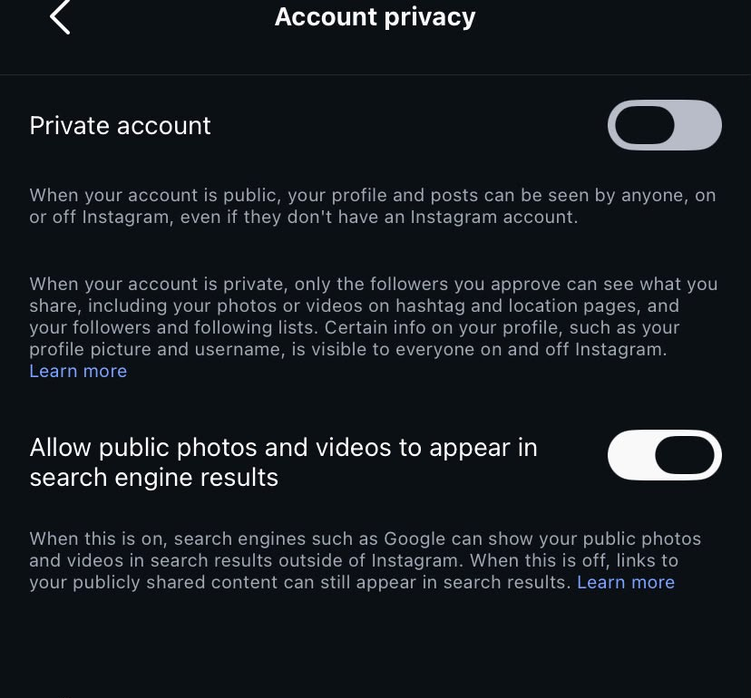

Social Media Privacy Audit
Project 03 · Digital privacy
Project overview
I carried out a privacy audit on my social media accounts to see how much personal information I was sharing publicly.
What I checked
- Who could see my posts and profile information.
- Whether location sharing was enabled.
- Which third-party applications had access to my accounts.
- Whether personal information was visible to the public.
Changes and learning
I removed my phone number and location from public view, changed account visibility to Private or Friends Only, and removed suspicious third-party apps. The audit taught me how to control my digital footprint and reduce the risk of scams and impersonation.
Screenshots

Back to Projects